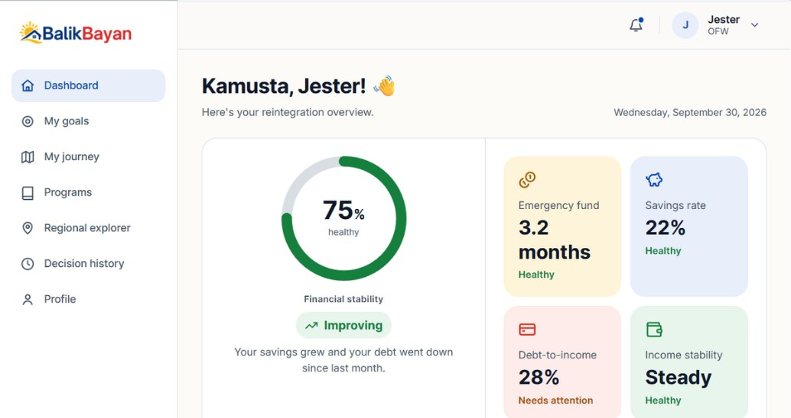

BalikBayan
A decision support platform that helps returning OFWs plan their reintegration, built with OWWA.

The problem
Overseas Filipino Workers coming home face big decisions at once: how to use their savings, whether to start a business, and which government programs they qualify for. Most of that guidance is scattered, generic, or hard to act on.
BalikBayan turns an OFW's own situation into a clear, ranked plan, and gives OWWA a portal to manage the programs and rules behind it.
What I did
- Conducted stakeholder interviews and design reviews with OWWA's Planning and Program Development Division to uncover the needs and decision barriers of returning OFWs.
- Synthesized findings into project scope, user stories, use cases, and prioritized features, then validated them in regular meetings with stakeholders.
- Led a 4-member team through Agile sprints, managing task assignments, deadlines, and issue resolution.
- Designed the information architecture, user flows, and Figma prototypes for both the OFW app and the OWWA admin portal.
- Developed the front end in Next.js and TypeScript, turning the Figma prototypes into working screens.
- Led the thesis documentation.
What it does
Financial stability score
One view of an OFW's readiness: emergency fund, savings rate, debt-to-income, and income stability.
Ranked goal plans
Goals move through Assess, Plan, Guide, and Monthly Check-in, with each step ranked #1, #2, #3 by the rule engine.
Programs and regions
Browse OWWA programs and explore opportunities by region.
Explainable recommendations
A reintegration assistant lets users ask why something was recommended.
Strategy simulator
Tappable what-if choices show how a decision changes the plan.
OWWA admin portal
Lets OWWA staff manage programs and the rules behind the recommendations.
How it works
Recommendations come from a rule-based engine. Rules are stored as JSON and evaluated with forward chaining: the engine starts from the user's data and applies matching rules until it reaches a ranked set of recommendations.
Just Elias